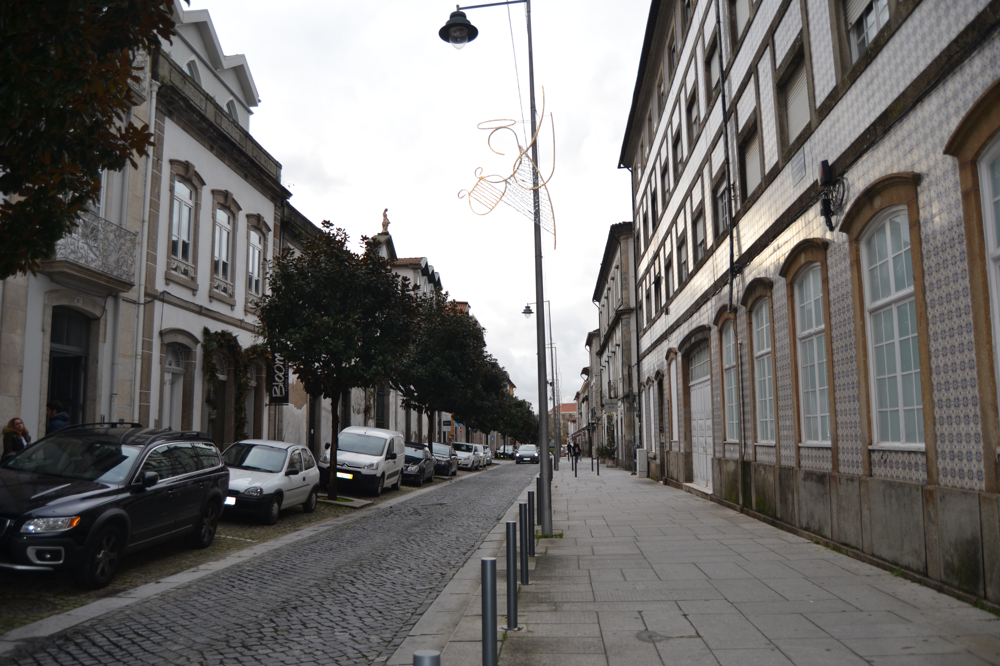
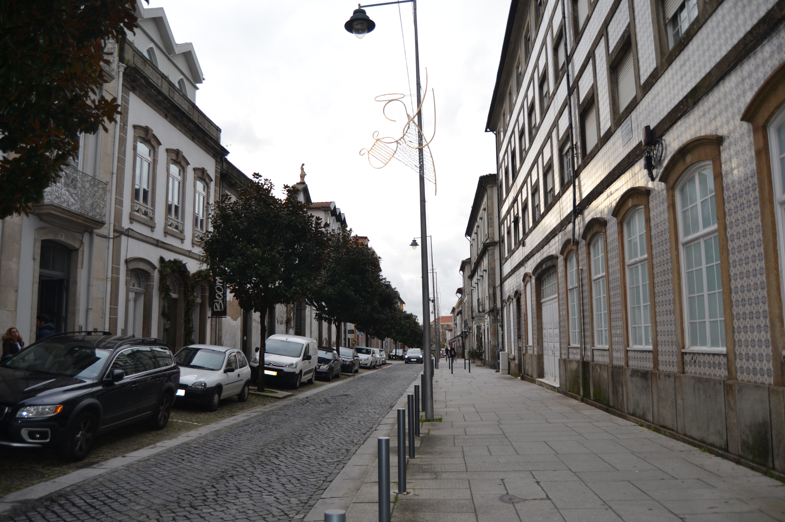

Travessa Da Rua Do Forno Para A Do Poco
Descrição:
Mais um fragmento da grande rua das Travessas, espinha dorsal do velho bairro medieval e que decalca uma velha rua romana.
Com construções de desigual desenho de fachada e características, esta é mais uma artéria que, lentamente, também foi perdendo a sua importância até aos finais do séc. XIX.
Em 1892 foi consideravelmente alargada, sendo destruídos todos os seus prédios, embora a linha de fachadas do lado Sul se tivesse mantido.
Hoje conservam-se apenas alguns pormenores da casa do prazo n.º 5, que era um belo edifício gótico e com pedra de armas: e onde, parece terem vivido familiares de João de Barros, autor da «Geografia de Entre Douro e Minho».
Extremamente curiosa é, também, a casa do prazo n.° 6. Com portão e janelas renascentistas, organiza-se em diferentes pisos, ligados por um muro oblíquo, descendo para o canto da rua. Sobre essa parte do edifício, tem um acréscimo, empoleirado, fazendo lembrar a arquitectura japonesa.
Das 8 casas do lado Norte e 9 do lado Sul, são 4 e 6, respectivamente, prazos do Cabido.
Hoje esta travessa é um troço na rua D. Afonso Henriques situado entre a rua do Forno e a rua D. Gonçalo Pereira.
A casa n° 1 confronta, do nascente, com a Rua do Forno. Fazem parte deste prazo os n° 15. 16, 17, 18 e 19, da Rua do Forno ou dos Cegos. A casa n° 16 é foreira ao chantrado e paga de censo ao cabido 2 maravedis, ou seja. 54 reis.
A casa n° 1 confronta, do nascente, com a Rua do Forno. Fazem parte deste prazo os n° 15. 16, 17, 18 e 19, da Rua do Forno ou dos Cegos. A casa n° 16 é foreira ao chantrado e paga de censo ao cabido 2 maravedis, ou seja. 54 reis.
A casa n° 3 confronta, do sul, com a Rua dos Palhais e,foi unida ao n° 4 em 1622. A casa n.º 4 foi deixada ao cabido pelo arcediago de Vermoim. Francisco Fernandes, com encargo de um aniversário de três lições.
A casa n° 3 confronta, do sul, com a Rua dos Palhais e,foi unida ao n° 4 em 1622. A casa n.º 4 foi deixada ao cabido pelo arcediago de Vermoim. Francisco Fernandes, com encargo de um aniversário de três lições.
É foreira ao morgado de Real. O censo é pago por Lopo de Barros de Almeida.
Situa-se na esquina da Rua do Poço e confronta, do sul, com a casa n° 17 da dita rua. Pertence a este prazo o n.º 16, da Rua de Santa Maria ou do Poço.
Ao prazo n.º 7 foram unidos, em 1561, dois ênxidos que se separaram dos n.º 13 e 14 da Rua do Poço e, em 1677. as casas dos referidos n.ºs.
Corresponde ao n.° 2 da Rua Pequena.
Confronta, do nascente, com casa foreira à cororaria.
Corresponde ao n.º 20 da Rua do Forno, para onde tem a frontaria e serventia principais. Confronta, do poente, com casa foreira à cororaria.
Casas:
| Número | Enfiteuta | Foro | Descrição |
|---|---|---|---|
| 1 | Dr. Francisco Gomes do Couto | 600 reis e 8 galinhas | A casa n° 1 confronta, do nascente, com a Rua do Forno. Fazem parte deste prazo os n° 15. 16, 17, 18 e 19, da Rua do Forno ou dos Cegos. A casa n° 16 é foreira ao chantrado e paga de censo ao cabido 2 maravedis, ou seja. 54 reis. |
| 2 | 108 reis (de censo) | A casa n° 1 confronta, do nascente, com a Rua do Forno. Fazem parte deste prazo os n° 15. 16, 17, 18 e 19, da Rua do Forno ou dos Cegos. A casa n° 16 é foreira ao chantrado e paga de censo ao cabido 2 maravedis, ou seja. 54 reis. | |
| 3 | Pedro da Cunha Sottomaior | 1050 reis e 4 galinhas | A casa n° 3 confronta, do sul, com a Rua dos Palhais e,foi unida ao n° 4 em 1622. A casa n.º 4 foi deixada ao cabido pelo arcediago de Vermoim. Francisco Fernandes, com encargo de um aniversário de três lições. |
| 4 | Pedro da Cunha Sottomaior | 1050 reis e 4 galinhas | A casa n° 3 confronta, do sul, com a Rua dos Palhais e,foi unida ao n° 4 em 1622. A casa n.º 4 foi deixada ao cabido pelo arcediago de Vermoim. Francisco Fernandes, com encargo de um aniversário de três lições. |
| 5 | 54 reis (de censo) | É foreira ao morgado de Real. O censo é pago por Lopo de Barros de Almeida. | |
| 6 | Padre António de Sousa e Alvim | 400 reis e 1 galinha | Situa-se na esquina da Rua do Poço e confronta, do sul, com a casa n° 17 da dita rua. Pertence a este prazo o n.º 16, da Rua de Santa Maria ou do Poço. |
| 7 | Os herdeiros de João do Vale Campos | 1200 reis e 8 galinhas | Ao prazo n.º 7 foram unidos, em 1561, dois ênxidos que se separaram dos n.º 13 e 14 da Rua do Poço e, em 1677. as casas dos referidos n.ºs. |
| 8 | Corresponde ao n.° 2 da Rua Pequena. | ||
| 9 | Os herdeiros de Henrique de Sousa e Alvim | 330 reis e 2 galinhas | Confronta, do nascente, com casa foreira à cororaria. |
| 10 | Corresponde ao n.º 20 da Rua do Forno, para onde tem a frontaria e serventia principais. Confronta, do poente, com casa foreira à cororaria. |
Imagens:
Travessa Da Rua Do Forno Para A Do Poço - vista norte.

Travessa Da Rua Do Forno Para A Do Poço - vista sul.

Fotos atuais da rua:
 
